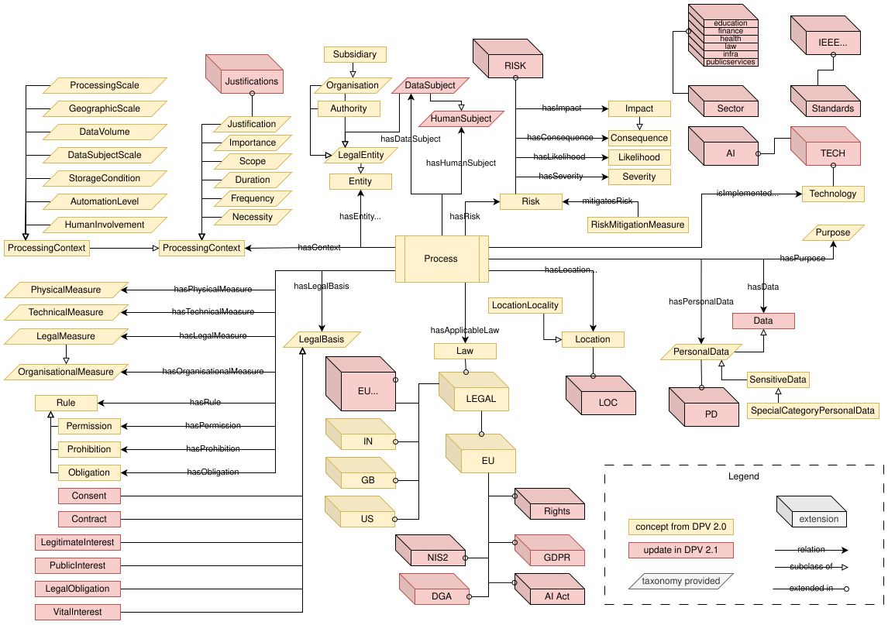
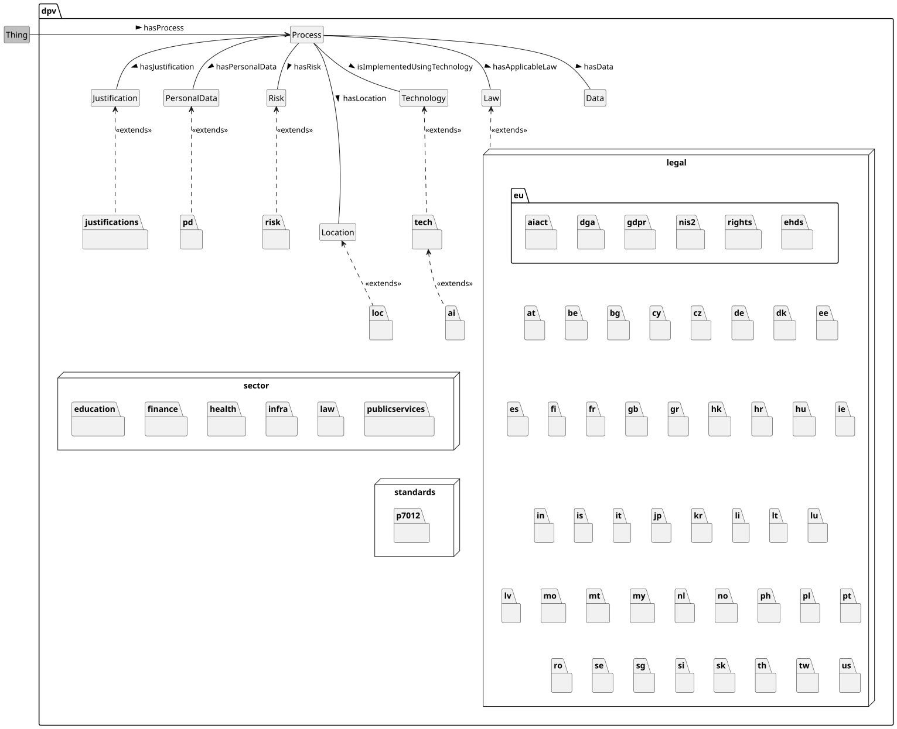

Contributors: (ordered alphabetically) Arthit Suriyawongkul(ADAPT Centre, Trinity College Dublin),
Axel Polleres(Vienna University of Economics and Business),
Beatriz Esteves(IDLab, IMEC, Ghent University),
Bud Bruegger(Unabhängige Landeszentrum für Datenschutz Schleswig-Holstein),
Damien Desfontaines(No affiliation provided),
Danielle Welter(University of Luxembourg),
David Hickey(Dublin City University),
Delaram Golpayegani(ADAPT Centre, Trinity College Dublin),
Elmar Kiesling(Vienna University of Technology),
Fajar Ekaputra(Vienna University of Technology),
Georg P. Krog(Signatu AS),
Harshvardhan J. Pandit(AI Accountability Lab (AIAL), Trinity College Dublin),
Iain Henderson(JLINC Labs),
Javier Fernández(Vienna University of Economics and Business),
Julian Flake(University of Koblenz),
Julio Hernandez(Dublin City University),
Mark Lizar(OpenConsent/Kantara Initiative),
Maya Borges(Danish Agency for Digitisation),
Paul Ryan(Uniphar PLC),
Piero Bonatti(Università di Napoli Federico II),
Rana Saniei(Universidad Politécnica de Madrid),
Rob Brennan(University College Dublin),
Rudy Jacob(Proximus),
Simon Steyskal(Siemens),
Steve Hickman(Epistimis LLC).
NOTE: The affiliations are informative, do not represent formal endorsements, and may be outdated as this list is generated automatically from existing data.
The Data Privacy Vocabulary [[DPV]] enables expressing machine-readable metadata about the use and processing of (personal or otherwise) data and technologies based on legislative requirements such as the General Data Protection Regulation [[GDPR]]. This document describes the DPV specification along with its data model. The canonical URL for DPV is https://w3id.org/dpv which contains (this) specification. The namespace for DPV terms is https://w3id.org/dpv#, the suggested prefix is dpv, and this document along with source and releases are available at https://github.com/w3c/dpv. A changelog this version is provided in the appendix.
DPV Specifications: The [[DPV]] is the core specification within the DPV family, with the following extensions: Personal Data [[PD]], Locations [[LOC]], Risk Management [[RISK]], Technology [[TECH]] and [[AI]], [[JUSTIFICATIONS]], [[SECTOR]] specific extensions, and [[LEGAL]] extensions modelling specific jurisdictions and regulations. A [[PRIMER]] introduces the concepts and modelling of DPV specifications, and [[GUIDES]] describe application of DPV for specific applications and use-cases. The Search Index page provides a searchable hierarchy of all concepts. The Data Privacy Vocabularies and Controls Community Group (DPVCG) develops and manages these specifications through GitHub. For meetings, see the DPVCG calendar.
Contributing: The DPVCG welcomes participation to improve the DPV and associated resources, including expansion or refinement of concepts, requesting information and applications, and addressing open issues. See contributing guide for further information.
Introduction
The motivation of DPV is to provide a 'data model' or an 'ontology' of concepts for interoperable representation and exchange of information about processing of (personal) data and the use of technologies. For this, the DPV specification defines concepts and relationships using the [[RDF]] standard, and which can additionally be implemented and applied using technologies appropriate to a use-case's specific requirements.
The DPV specification contains several distinct groups of concepts, some of which are provided with a taxonomy of concepts to support practical use-cases. In addition to these, 'extensions' to the DPV are also provided which further extend one or more DPV concepts or enable separation of concepts - such as for distinguishing between different jurisdictions and laws. The figure below shows an overview of the DPV concepts along with its extensions.

Overview of DPV v2.0 showing core concepts and relationships with their further expansion as taxonomies and extensions
DPV and its extensions (collectively DPV vocabularies) consists of certain 'core concepts' that are intended to be independent representations of specific information, and are distinct from other core concepts. For example, the [=Purpose=] refers only to the purpose of why personal data is processed and is independent as a concept from the other concepts (e.g. [=PersonalData=] or [=LegalBasis=]). The structuring of DPV is based on providing rich and comprehensive taxonomies that group concepts together based on each core concept, e.g. taxonomy of purposes, taxonomy of legal basis. 'Extensions' are a separate group of concepts that expand the 'core' vocabulary or provide concepts focused on a particular topic e.g. [[PD]] for personal data categories and [[RISK]] for risk management. Extensions allow allow modelling legally relevant but jurisdictionally applicable concepts e.g. [[EU-GDPR]] for concepts from EU's GDPR.
Vocabularies
DPV
The rest of the document expands on the core concepts through the following taxonomies.
Risk & Impacts for risk assessment, management, and expression of consequences and impacts associated with processing.
Rights and Rights Exercise for specifying what rights are applicable, how they can be exercised, and how to provide information associated with rights.
Rules for expressing constraints, requirements, and other forms of rules that can specify or assist in interpreting what is permitted, prohibited, mandatory, etc.
In addition to these the Extensions section describes the available extensions which also provide additional taxonomies for specific concepts within the DPV.
Extensions

Structure of DPV vocabularies where DPV defines the core concepts which are then extended in specific extensions. The LEGAL extensions are named using ISO 3166-2 country codes, and contain specific extensions modelling laws within that jurisdiction. SECTOR and STANDARDS extensions also contain extensions within them modelling specific sectors and standards respectively.
To supplement the concepts and taxonomies in [[DPV]] for specific applications, use-cases, or to provide separation for better management of terms, we provide several extensions to the DPV.
Personal Data (PD)
[[[PD]]] provides additional concepts that extend the DPV's personal data taxonomy based on an opinionated structure contributed by R. Jason Cronk from EnterPrivacy. This separation is to enable adopters to decide whether the extension's concepts are useful to them, or to use other external vocabularies, or define their own.
Concepts within [[PD]] are broadly structured in top-down fashion by utilising their relevance and origin as:
Internal (within the person): e.g. Preferences, Knowledge, Beliefs
External (visible to others): e.g. Behavioural, Demographics, Physical, Sexual, Identifying
Household: e.g. personal or household activities
Social: e.g. Family, Friends, Professional, Public Life, Communication
Financial: e.g. Transactional, Ownership, Financial Account
Tracking: e.g. Location, Device based, Contact
Historical: e.g. Life History
Locations (LOC)
[[[LOC]]] provides additional concepts regarding locations such as countries and regions based on the ISO 3166 standards. It enables representing information such as processing takes place within Ireland, represented by loc:IE, or within European Union (EU) by using loc:EU. We are working on expanding this list to also specify regions, cities, and other pertinent location details, and welcome participation and contributions for this.
Risk Management (RISK)
[[[RISK]]] builds on top of the lightweight risk framework within DPV by providing the following extensive concepts related to risk assessment and management. We are in the process of identifying additional concepts and taxonomies for the risk extension, such as for risk management procedures and the creation of a risk ontology based on ISO standards.
Risk Controls - categories of measures such as those related to risk source, likelihood, consequence, vulnerability, as well as the intended effect in terms of monitoring, controlling, halting, removing, or reducing.
Consequences and Impacts - list of consequences such as data breaches, costs, identity theft and several others that are categorised based on DPV's impact framework i.e. damage, harm, or detriment.
Scale for Risk Levels, Severity, and Likelihood - a 7 point qualitative scale to express concepts associated with levels, severity, and likelihood of risk and its consequences.
Risk Matrix - an encoded form of risk matrices based on combinations of severity and likelihood along with the resulting risk level. Risk matrix nodes and values are provided for dimensions 3x3, 5x5, and 7x7.
Incidents, Reports, and Notices - specifying incidents such as security incidents or data breaches, documenting information about them, and notices used to communicate with other relevant entities such as authorities and data subjects.
Risk Management - risk management concepts based on ISO 31000 series.
Technologies (TECH)
[[[TECH]]] extends the DPV's terms to represent further specific details regarding technologies, their management, and relevance to actual real-world tools and systems. It provides concepts for the following:
Communication method: WiFi, Bluetooth, GPS, Cellular Network
Actors: Developer, Provider, User, Subject, etc.
Intended Use: what the technology was/is intended to be used for
Documentation: technical and user manuals and other documentation
Status: whether the technology has been released, has been provided, and other statuses
Tools: databases, cookies, etc.
The intention and aim of developing the TECH extension is to describe real-world tools and services, such as a specific cloud storage provider, and provide categorisation and metadata to connect it to DPV's concepts, such as to indicate the cloud storage instance features encryption at rest as a technical measure. Through these, the management and documentation of use-cases can be made easier by providing the relationships between tools/services and technical measures as a 'knowledge graph'.
Artificial Intelligence (AI)
The [[[AI]]] extension provides concepts specifically regarding AI by extending the [[TECH]] extension. It consists of:
Techniques such as machine learning and natural language programming
Capabilities such as image recognition and text generation
Lifecycle such as data collection, training, fine-tuning, etc.
Risks such as data poisoning, statistical noise and bias, etc.
Risk Measures to address the AI specific risks
Documentation such as Data Sheets and Model Cards
Data associated with AI development, training, validation, and use.
Systems and Models such as General Purpose, Robotics, Expert Systems.
Justifications
[[[JUSTIFICATIONS]]] provides concepts for use as 'justifications' with DPV. For example, where a right cannot be fulfilled, a justification such as 'identity could not be verified' is represented using a specific concept.
Legal Jurisdictions
[[[LEGAL]]] provides concepts to represent laws, authorities, and other legal concepts in various jurisdictions. It is structured to create a separate namespace for each country or jurisdiction by using the ISO 3166-2 code, for example IE represents Ireland and EU represents the European Union. Within this namespace, the specific laws and authorities for that jurisdiction are defined.
At the moment, the following jurisdictions are defined:
The following Members States of the European Union are defined in their individual namespaces, with [[LEGAL-EU]] as an additional namespace for representing laws and concepts at EU-level:
[[LEGAL-AT]] for Austria, [[LEGAL-BE]] for Belgium, [[LEGAL-BG]] for Bulgaria, [[LEGAL-CY]] for Cyprus, [[LEGAL-CZ]] for Czech Republic, [[LEGAL-DE]] for Germany, [[LEGAL-DK]] for Denmark, [[LEGAL-EE]] for Estonia, [[LEGAL-ES]] for Spain, [[LEGAL-FI]] for Finland, [[LEGAL-FR]] for France, [[LEGAL-GR]] for Greece, [[LEGAL-HR]] for Croatia, [[LEGAL-HU]] for Hungary, [[LEGAL-IE]] for Ireland, [[LEGAL-IS]] for Iceland, [[LEGAL-IT]] for Italy, [[LEGAL-LI]] for Liechtenstein, [[LEGAL-LT]] for Lithuania, [[LEGAL-LU]] for Luxembourg, [[LEGAL-LV]] for Latvia, [[LEGAL-MT]] for Malta, [[LEGAL-NL]] for Netherlands, [[LEGAL-NO]] for Norway, [[LEGAL-PL]] for Poland, [[LEGAL-PT]] for Portugal, [[LEGAL-RO]] for Romania, [[LEGAL-SE]] for Sweden, [[LEGAL-SI]] for Slovenia, [[LEGAL-SK]] for Slovakia.
Additional jurisdictions: [[LEGAL-GB]] for Great Britain and Northern Ireland, [[LEGAL-HK]] for Hong Kong, [[LEGAL-IN]] for India, [[LEGAL-JP]] for Japan, [[LEGAL-KR]] for Republic of Korea, [[LEGAL-MO]] for Macao, [[LEGAL-MY]] for Malaysia, [[LEGAL-PH]] for the Philippines, [[LEGAL-SG]] for Singapore, [[LEGAL-TH]] for Thailand, [[LEGAL-TW]] for Taiwan, [[LEGAL-US]] for United States of America.
Laws
Within the [[LEGAL-EU]] extension namespace, the following laws are defined as separate extensions with their own namespaces:
[[[EU-GDPR]]]
[[[EU-DGA]]]
[[[EU-NIS2]]]
[[[EU-AIAct]]]
[[[EU-EHDS]]]
[[[EU-RIGHTS]]]
Sector
[[SECTOR]] provides extensions modelling specific sectors by using those sector-specific concepts, terms, and modelling which extends the concepts in other DPV extensions. At the moment, it only extends the [=Purpose=] taxonomy in [[DPV]]. In the future, we plan to provide more concepts such as [=Data=] and [=PersonalData=] categories.
The following sectorial extensions are currently provided:
[[SECTOR-EDUCATION]] for Education Sector
[[SECTOR-FINANCE]] for Finance Sector
[[SECTOR-HEALTH]] for Health Sector
[[SECTOR-INFRA]] for (Critical) Infrastructure Sector
[[SECTOR-LAW]] for Law Enforcement & Justice Sector
[[SECTOR-PUBLICSERVICES]] for Public Services Sector
Standards
The STANDARD extensions model specific concepts and processes along with the terminology defined and used within specific standards. The goal of this is to represent concepts and processes defined in standards produced in forums such as ISO, CEN/CENELEC, NIST, and IEEE so that they can be used with DPV. It is not intended to duplicate the existing standards, especially when they are already provided as semantic web representations.
The following standards are currently provided:
[[STANDARD-P7012]] for [[[IEEE-P7012]]]
Guidance
Guides
The [[[GUIDE-Consent-27560]]] [[GUIDE-Consent-27560]] provides implementation of machine-readable consent records and receipts as defined in [[ISO-27560]] by using the Data Privacy Vocabulary (DPV). Additionally, it also provides guidance on using [[ISO-27560]] for meeting [[GDPR]] requirements regarding consent.
As the default semantics in DPV use RDFS and SKOS, the [[[GUIDE-OWL2]]] [[GUIDE-OWL2]] provides guidance for the use of DPV as an OWL2 ontology, and explains how DPV can be easily encoded in a low-complexity profile of OWL2 called OWL2-PL to perform efficient semantic reasoning.
Planned guides in the near future include: ISO-29184 Privacy Notices, GDPR Record of Processing Activities (ROPA), GDPR Data Protection Impact Assessment (DPIA), Data Breach Records and Notifications, Rights Management. Also planned is the [[GUIDE-ODRL]] to provide guidance for the use of DPV concepts with [[[ODRL-MODEL]]] and [[[ODRL-VOCAB]]] which are W3C standards for machine-readable representations of policies and agreements.
Applications
This section provides brief examples of how various DPV concepts and extensions are relevant to specific applications.
The DPVCG was established as part of the SPECIAL H2020 Project, which received funding from the European Union’s Horizon 2020 research and innovation programme under grant agreement No. 731601 from 2017 to 2019. Continued developments have been funded under: RECITALS Project funded under the EU's Horizon program with grant agreement No. 101168490.
Harshvardhan J. Pandit was funded to work on DPV from 2020 to 2022 by the Irish Research Council's Government of Ireland Postdoctoral Fellowship Grant#GOIPD/2020/790.
The ADAPT SFI Centre for Digital Media Technology is funded by Science Foundation Ireland through the SFI Research Centres Programme and is co-funded under the European Regional Development Fund (ERDF) through Grant#13/RC/2106 (2018 to 2020) and Grant#13/RC/2106_P2 (2021 onwards).
Funding Acknowledgements for Contributors
The contributions of Piero Bonatti and Luigi Sauro to the DPVCG have been funded by the European Union’s Horizon 2020 research and innovation programme under grant agreement N. 731601 (project SPECIAL) until 2019, and under grant agreement N. 883464 (project TRAPEZE) from 2020 until 2023.
The contributions of Beatriz Esteves, Delaram Golpayegani, and Rana Saniei have received funding through the PROTECT ITN Project from the European Union’s Horizon 2020 research and innovation programme under the Marie Skłodowska-Curie grant agreement No 813497, in particular through the development of AI Risk Ontology (AIRO) and Vocabulary of AI Risks (VAIR) which have been integrated in to this extension. Beatriz Esteves is funded by SolidLab Vlaanderen (Flemish Government, EWI and RRF project VV023/10), and by the imec.icon project PACSOI (HBC.2023.0752) which was co-financed by imec and VLAIO. Julian Flake received funding from the TITAN project funded under European Union’s Horizon Europe Framework Programme grant#101129822 and from the European Union’s Digital Europe Programme grant#101123471 (EDGE-Skills).
The contributions of Harshvardhan J. Pandit, Arthit Suriyawongkul, Delaram Golpayegani, and Rob Brennan have been made with the financial support of Science Foundation Ireland under Grant Agreement No. 13/RC/2106_P2 at the ADAPT SFI Research Centre. The contributions of Harshvardhan J. Pandit have been made with the AI Accountability Lab (AIAL) which is supported by grants from following groups: the AI Collaborative, an Initiative of the Omidyar Group; Luminate; the Bestseller Foundation; and the John D. and Catherine T. MacArthur Foundation.
Semantics & Scope
Semantics
DPV's terms are defined using [[RDFS]] & [[SKOS]] semantics where all 'classes' and 'properties' are defined as skos:Concept in addition to rdfs:Class and rdf:Property respectively. For taxonomies or hierarchies, concepts are defined as 'instances' of a top-concept, and relationships within the hierarchy are defined using skos:broader/skos:narrower. For example, [=Purpose=] is the top concept within the purposes taxonomy, and all concepts in the purpose taxonomy are instances of it, and are related to each other using skos:broader/narrower relations, such as [=ServiceProvision=] and its more specific form [=RequestedServiceProvision=] are both instances of [=Purpose=] while being related to each other using skos:broader/narrower.
[[[DPV-OWL]]] is an alternate serialisation of DPV that contains the same concepts but is provided under a different namespace with the semantics defined using [[OWL]]. The conversion from SKOS to OWL follows the best practices and concerns outlined in [[[SKOS-OWL]]], e.g. by replacing skos:Concept with owl:Class, and using rdfs:subClassOf instead of skos:broader/skos:narrower. See the example showing implications of using SKOS vs OWL in the [[PRIMER]].
The table provides an overview of the expression of concepts across the three DPV serialisations. These may be expanded in the future, including to non-semantic-web serialisations.
Concept
Default
OWL
Semantics
[[RDF]], [[RDFS]], [[SKOS]]
[[RDF]], [[RDFS]], [[OWL]]
Concept/Term
skos:Concept
owl:Class
subtype relation
skos:broader
owl:subClassOf
instance/type relation
rdf:type
rdf:type
relations/association
rdf:Property
owl:ObjectProperty
relation domain
rdfs:domain
rdfs:domain
relation range
rdfs:range
rdfs:range
Scope Change in v2.0
In DPV v1.0, the scope of the DPV and the DPVCG was limited to 'privacy', 'data protection', and the 'processing of personal data', including technologies used to perform it. Under this scope, the DPVCG discussed and modelled regulations such as the [[EU-GDPR]] which also share the same scope. Newer laws such as the [[EU-DGA]] and [[EU-AIAct]] share a significant overlap with this scope and necessitate their inclusion in DPVCG activities. However, such laws utilise the same legal framework to model both personal and non-personal data (for DGA) or regulate a technology that goes beyond 'personal data' (DGA and AI Act). To enable their inclusion and representation as extensions to the DPV, and to enable adopters to utilise a single consistent framework to represent information, the scope of DPVCG and the DPV was expanded in v2.0 as follows:
Expansion of scope to include 'data' and 'technologies' instead of only 'personal data' - this means concepts such as [=Purpose=] which were defined as purpose associated with 'personal data' are now defined as purpose associated with 'data or technologies'.
Creation of concepts to represent expanded scope - such as [=Data=] as the broader concept for both [=PersonalData=] and [=NonPersonalData=].
Changing the scope of associated extensions such as [[TECH]] and [[RISK]] to be useful for any technology and activities and not just personal data related technologies and activities.
Creating [[AI]] as a new extension to specifically provide concepts associated with AI technologies.
Creating extensions to represent concepts from laws regarding 'data and technologies' based on the new concepts and extensions created e.g. [[EU-DGA]] and [[EU-AIAct]] extensions.
Creating new namespaces such as /legal/eu/gdpr instead of /dpv-gdpr to enable consisting and unambiguous representation of legal extensions
Restructuring the GitHub repository to accommodate the changed structure of DPV extensions
In addition to the above, the v2.0 scope change also includes removal of the bespoke 'DPV serialisation' which was based on a custom extension of [[SKOS]]. Instead, the RDFS+SKOS serialisation has been made the default serialisation, and the alternate OWL2 serialisation is continued as before.
Changelog for v2.3-dev
total terms: 1165 ; added: 47 ; removed: 11
The changelog provides more information on concepts that have been added/removed in this version. Below is a summary of the changes.
Removed concepts include fixing typos in Contract Statuses, Rule Fulfilment Statuses, Rights Fulfilment Status and the property isOrganisationalUnitOf.
Rule and RuleFulfilmentStatus: Added new rule types (acceptable, unacceptable, recommendation, deterrence) and associated statuses along with properties.
ReuseCompatibility: Concepts describing reuse as primary and secondary use.
Location: Concepts representing jurisdiction, public/private spaces and ownership, and a property to indicate locations outside a reference concept.
Data: Concepts representing unstructured and uncategorised data.
Additional changes introduced in v2.2.1: fixed range of dpv:hasEntityControl to dpv:EntityInvolvement
This document is based on inspiration from the following: